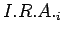

El Índice de Riesgo de Afección Ambiental ()2.2 pretende conocer cual es el potencial de afección ambiental que se produce para cada uno de los elementos del medio, considerando el valor ambiental del mismo. Se calcula aplicando la expresión 2.2.
En esta expresión:
(i) hace referencia a cada uno de los elementos del medio.
 es lo que se ha denominado Probabilidad de
contaminación para cada
elemento del medio (i), que se refiere al estado ambiental
del punto de vertido.
es lo que se ha denominado Probabilidad de
contaminación para cada
elemento del medio (i), que se refiere al estado ambiental
del punto de vertido.
 es el Valor ambiental de
los distintos elementos del medio (i), que se refiere a las
características de éstos frente a la dinámica del
vertedero.
es el Valor ambiental de
los distintos elementos del medio (i), que se refiere a las
características de éstos frente a la dinámica del
vertedero.
En los siguientes apartados se desarrollan estos dos componentes.